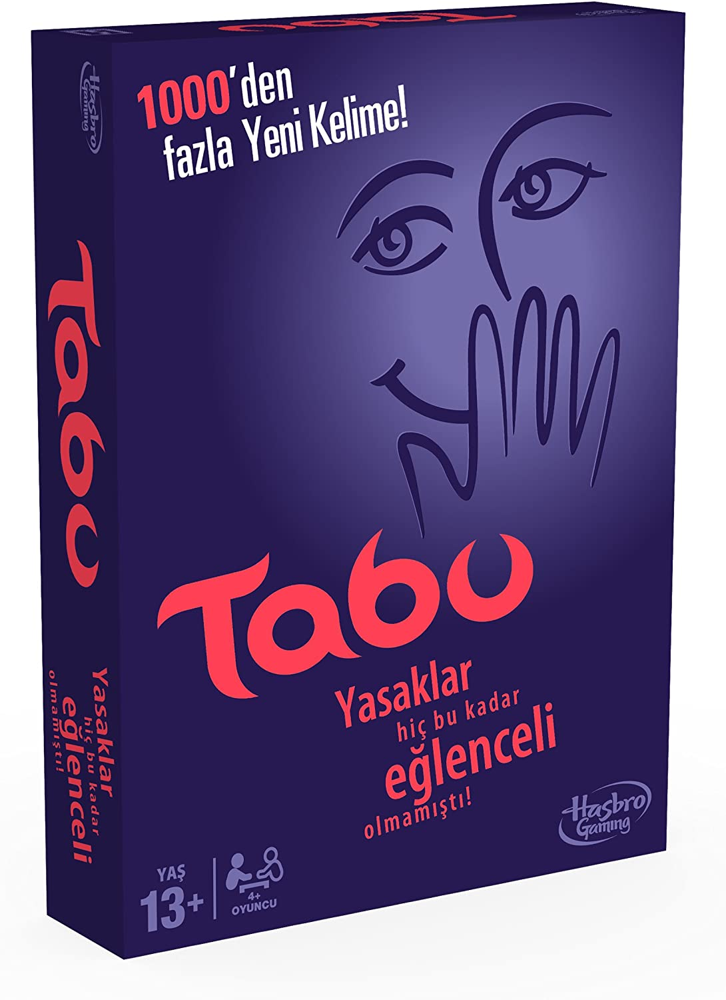

Tabu nedir?
Tabu genel olarak kazanmaktan çok süreç içinde eğlenmeyi hedefleyen bir aile oyunu olduğunu söylemek doğru olacaktır. Bu yazı siz okuyuculara tabunun kuralları ve oynanışı hakkında bilgi ve yeni başladıysanız birkaç da tüyo vermeyi amaçlayacak.
7 Adımda Tabu Kuralları
-
Oyuna Başlarken
Öncelikle iki takıma ayrılın. Birazdan da değineceğim gibi, karşı takımı gözleyebilmek oyunda büyük önem taşıyor. Bu yüzden her oyuncu, karşı takımdan başka bir oyuncunun yanına oturacak şekilde masanın etrafına kurulun. Sonrasında tabu kartlarını karıştırın.Bir deste kartı alın ve kart kutusuna koyun. Bununla birlikte oyunun kurulum aşamasını tamamlamış olacaksınız.Oyun başlasın…
-
Oyunun Amacı
Oyunun amacı, Tabu kelimelerini -Kartın üstündeki anlatmaya çalıştığınız kelimenin altındaki 5 küçük kelime- kullanmadan ve kurallara uyarak takım arkadaşlarınıza soru kelimesini anlatmak. Bir anlık dalgınlıkla bile olsa Tabu kelimelerini kullanacak olursanız yanınızdaki sizi gözetleyen arkadaşınız düdüğü çalmaktan çekinmeyecektir.
-
Takımınızdan birini kelimeyi anlatması için seçin
-
Karşı takımdan biri düdük ve kum saatinin sorumluluğunu alsın
Düdüğü alan oyuncu, kum saatindeki sürenin dolması, anlatan oyuncunun tabu kelimelerinden birini kullanması veya herhangi başka bir kural ihlali yapması durumunda düdüğü çalacaktır
-
Diğer takım kum saatini çevirir çevirmez hızlıca en üstteki kartı çekin
Oyuna başlamadan önce kararlaştırılan renkteki kartları tabu kelimelerini kullanmadan anlatmaya çalışın,Pas geçilen ya da düdüğün çalındığı kartları yere bırakın,Kum saati dolana kadar yeni kelimeleri takımınıza anlatmaya devam edin.
-
Kum saati dolunca anlatmayı bırakın, takımınızın sırası sona erer.
Başarıyla anlattığınız her kelime için takımınız bir puan alır,Pas geçtiğiniz veya düdük çalınan her kelime için karşı taraf bir puan alır.
-
Şimdi sıra karşı takımda…
KAZANAN
Oyun başlamadan önce kaç tur oynayacağınızı veya ne kadar süre oynayacağınızı kararlaştırın. Oyun sonunda daha çok puana sahip takım kazanır, beraberlik durumunda beraberlik bozulana kadar devam edin.
OYUNU KEYİFLİ KILMAK İÇİN BAZI ÖNEMLİ KURALLAR
-
Kartın üzerinde yazılı kelimelerin herhangi bir bölümü kesinlikle ipucu olarak kullanılamaz! Örneğin soru kelimesi “HANIMELİ” ise “hanım” veya “el” diyemezsiniz.
-
Birleşik kelimeleri, örneğin “Oyunbozan” kelimesini “oyun” ve “bozmak” şeklinde bölerek anlatamazsınız.
-
Kartın üzerinde yazılı HERHANGİ bir kelimeden türetilen kelimeler ipucu olarak kullanılamaz. Örneğin Tabu kelimeleri arasında “içmek” varsa “içki” veya “içecek” diyemezsiniz.
-
Tabu kelimelerini takım üyeleri söylese bile anlatıcı bu kelimeleri kullanamaz.
-
İşaret dili kullanılamaz. Örneğin “alkış” kelimesini anlatmak için ellerinizi birbirine vuramazsınız.
-
Patlama veya motor sesi gibi ses efektleri kullanılamaz; şarkı melodisi mırıldanarak veya şarkı sözleri söylenerek anlatılamaz.
-
Soru kelimesinin ses veya kafiye bakımından benzediği kelimeler ipucu olarak kullanılamaz. Örneğin “Künye”yi anlatmak için “Fünyeye benziyor” diyemezsiniz.
-
Eğer açılımları karttaki kelimelerden biriyse veya bu kelimelerden türetilmişse kısaltmalar kullanılamaz. Örneğin “televizyon” yerine “TV” diyemezsiniz.
-
Türkçe dışında herhangi bir yabancı dili kullanarak kelime anlatamazsınız. Buna şarkı ya da film adları dahildir. Örneğin “Buz Devri” ni anlatırken “Ice Age” diyemezsiniz.
-
Soru kelimesini anlatmak için onunla bağlantılı marka isimlerini kullanamazsınız. Örneğin “Motosiklet”i anlatmak için “Harley Davidson” diyemezsiniz.